Thom Yorke
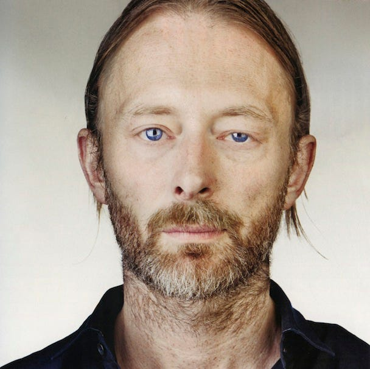
Nacido en 1968 en Inglaterra, es un enigmático artista británico conocido por su enfoque innovador y su compromiso con el activismo ambiental. Es reservado, talentoso y apasionado por la justicia social.

Soy Sofi. Este es Gently. Hago diseño gráfico, y esta es una de mis creaciones. Creo que este es uno de los diseños que mejor me representa, por eso decidí mostrarlo primero.
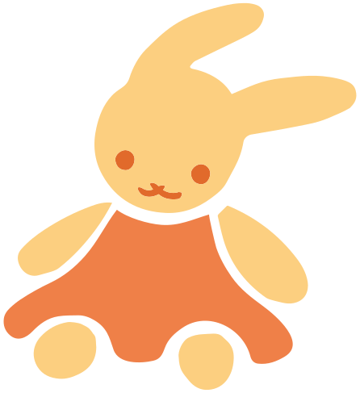
Me llamo Sofía Abril Rible, pero soy más conocida como Fosi o Fotsi, depende del grupo de amigos. Vivo en S. A. de Padua, ubicado en zona oeste. Tengo 19 años, y el 5 de octubre voy a cumplir 20. ¡Una paz!
Me encanta todo lo relacionado con la creatividad, ya sea dibujar, la música o el diseño. Creo que es muy necesario que la gente se exprese siempre que pueda. Así terminás encontrandote con gente muy valiosa en la vida, al compartir un arte o una emoción. Mando agradecimientos a mi amigo Tomy (@tomymalva) por sacarme esta foto.
Desde el 11 de marzo de 2024 curso en UADE; estoy haciendo la doble titulación en diseño gráfico y diseño multimedia y de interacción (¡qué largo!) y me encuentro en el primer cuatrimestre de mi primer año...
...pero técnicamente hablando, este no es mi primer año; en 2023, cursé un año de diseño gráfico en la Universidad de Morón.
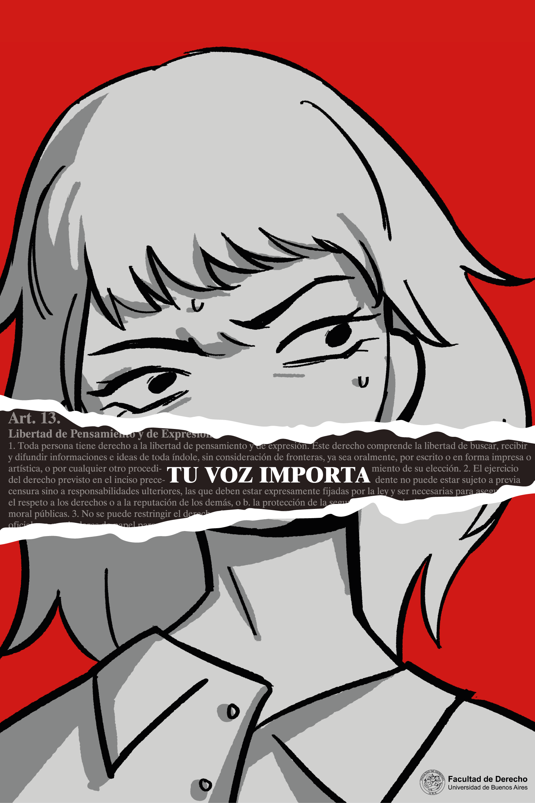

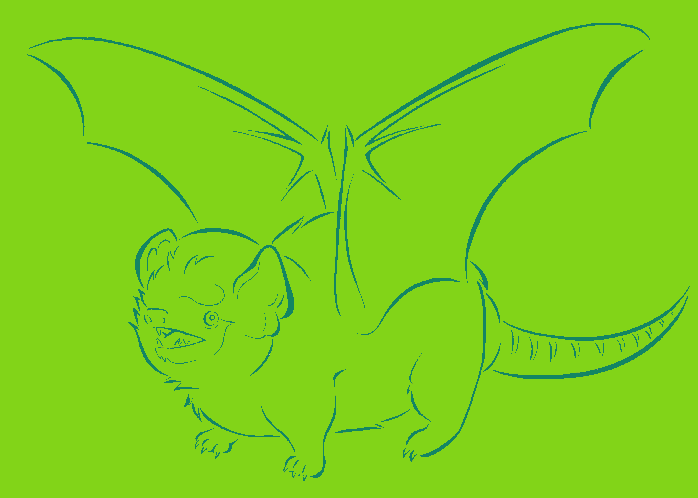
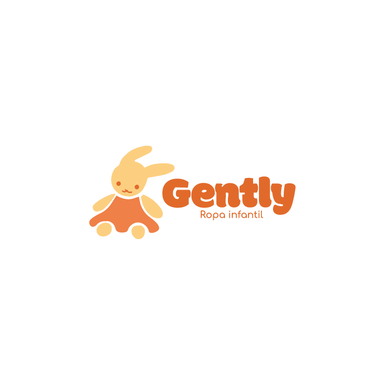
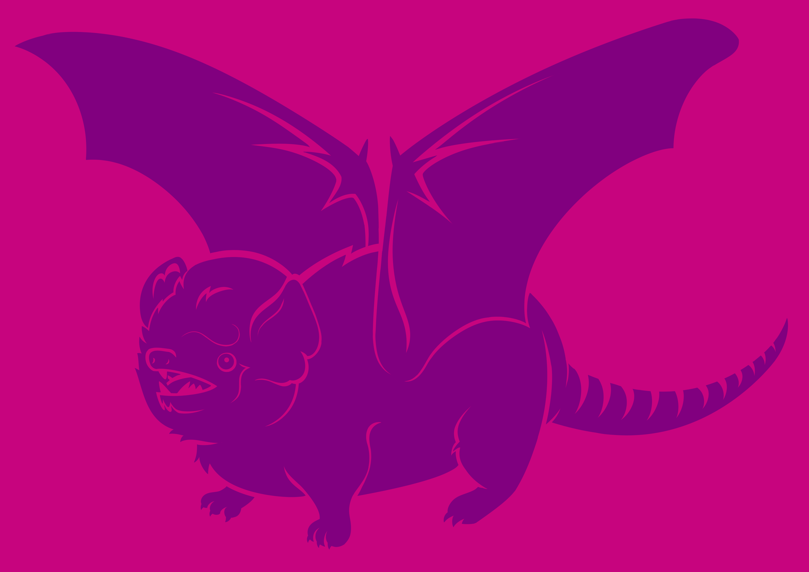


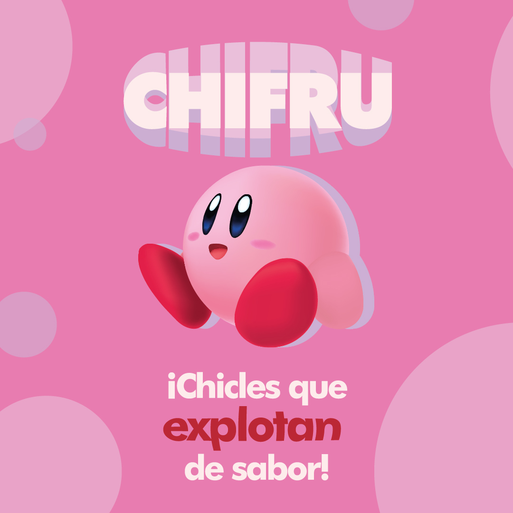
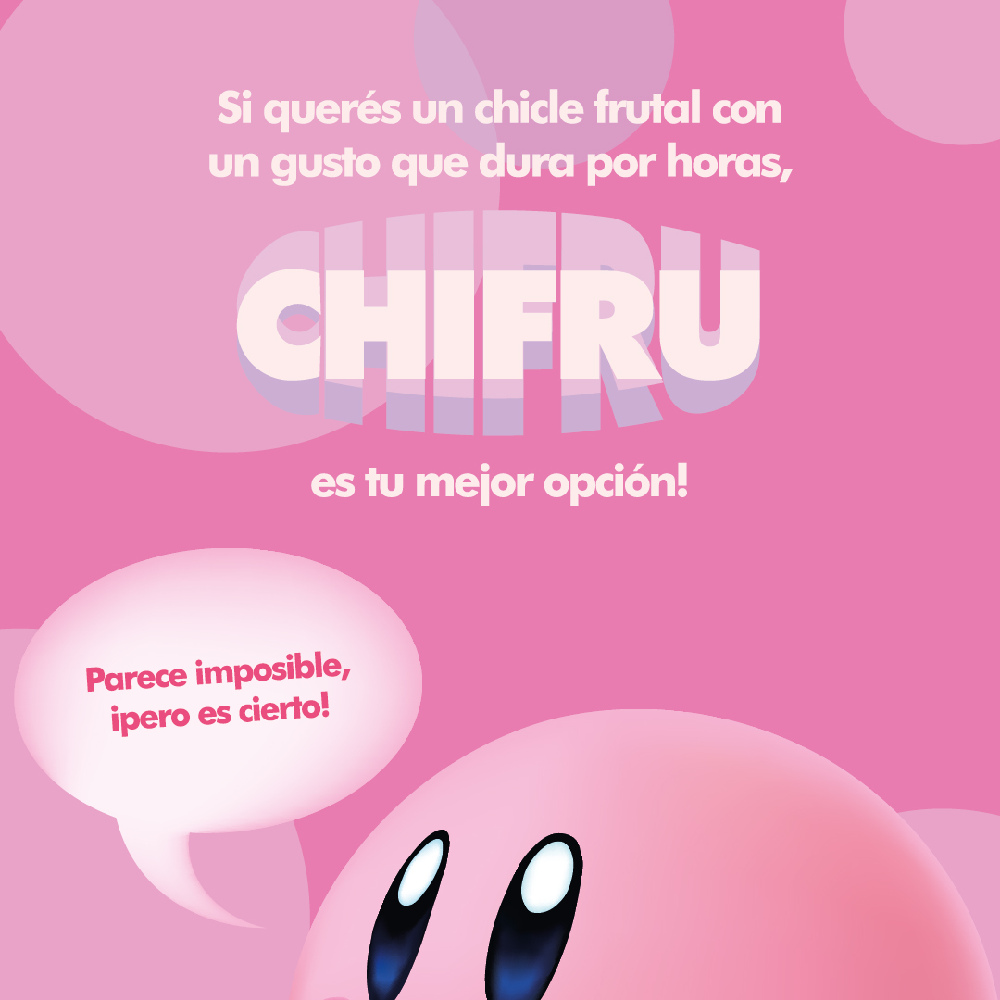
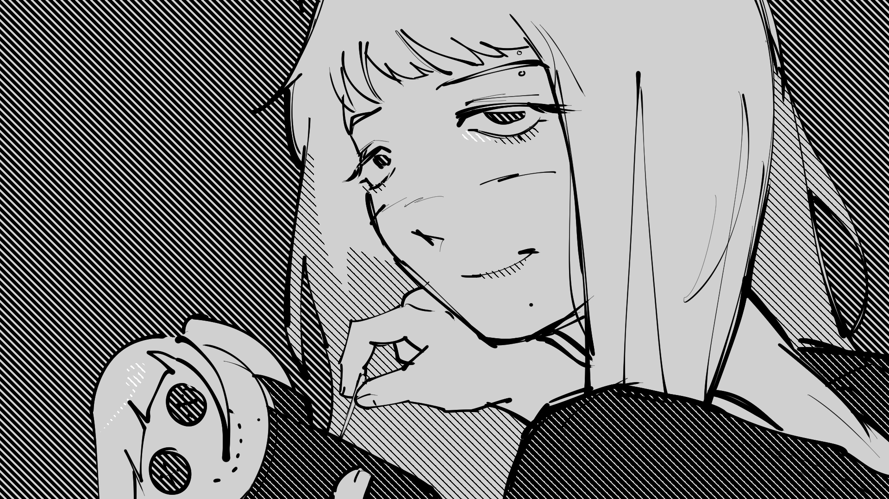
Empecé a dibujar cuando tenía 6 años, me inspiraba mucho ver dibujitos en la tele; ¡yo quería dibujar de la misma forma!
Desde que tengo acceso a las computadoras siempre encontré la manera de dibujar ahí. Usaba MS Paint y un mouse, que, si bien era tedioso, era todo lo que necesitaba para crear. Aun así, en 2017 mi papá se fue de viaje y cuando volvió me trajo una tableta gráfica. Al principio no entendía muy bien como hacerla andar, pero cuando la entendí, la computadora se convirtió en mi medio principal para dibujar.
Si bien ya no dibujo tanto como antes, sigue siendo uno de los hobbies que más amo. Creo que no sería la persona que soy hoy si no hubiese agarrado ese papel y lápiz.
En julio de 2023, una amiga que estudiaba cine en la FUC tenía que hacer un documental, y decidió utilizarme a mí y mi pintura como el tema. Grande Vicky Blanco! (ahora estudia en UADE)
No tengo mucha experiencia pintando, pero es una de las cosas que hago que me trae mucha satisfacción. Por 3 años fui a clases de dibujo; aprendí a pintar con tizas pastel, oleo pastel, lápices, grafito, entre otras cosas. Nunca me enseñaron a pintar con pinturas óleo, así que aprendí yo sola e hice un par de cuadros.
La pintura es increíble y si estás buscando un nuevo pasatiempo, te lo recomiendo (aunque tal vez no deberían empezar con pinturas óleo, es un poco demasiado tedioso).
Así es, toco un instrumento. Eso me hace cool, ¿o no? Bueno, sería más cool si tocara bien, pero… Em… En fin. Adjunto un TikTok de mi tocando Weird Fishes.
Toco desde 2019, pero definitivamente no sueno como alguien que toca desde 2019; practico muy poco, pero a pesar de mis carencias lo disfruto. Me gustaría tocar más junto con otras personas en una banda, ya que eso lo hace mucho más llevadero.
Definitivamente el género de música que más disfruto tocar es el rock.
Hey, hablando de rock...Radiohead es una de mis bandas favoritas; los empecé a escuchar en finales de 2022 y desde entonces no paré. Esta influyente e imprescindible banda británica de rock alternativo se formó en 1985 en Abingdon, Oxfordshire, compuesta por Thom Yorke, Jonny Greenwood, Ed O'Brien, Colin Greenwood y Phil Selway.
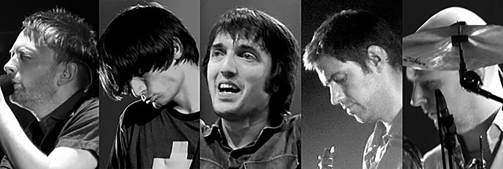
Esta banda es conocida por su capacidad de reinvención constante y su influencia innovadora en la música contemporánea. Desde su debut en los 90, han evolucionado desde un sonido de rock alternativo hacia una fusión de géneros que abarca electrónica, ambient y art rock, desafiando las convenciones tradicionales con cada nuevo álbum. Su trabajo se caracteriza por letras introspectivas y temáticas que exploran la alienación, la tecnología y la condición humana. Su enfoque experimental y su rechazo a conformarse con las tendencias comerciales han redefinido el rock moderno y dejado una huella duradera en la música y la cultura popular.

Nacido en 1968 en Inglaterra, es un enigmático artista británico conocido por su enfoque innovador y su compromiso con el activismo ambiental. Es reservado, talentoso y apasionado por la justicia social.
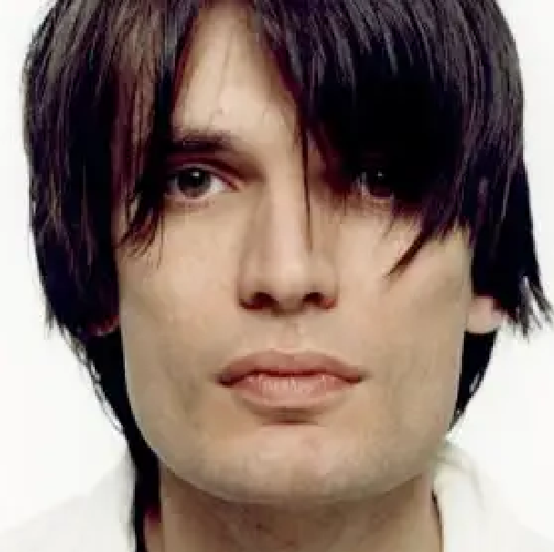
Nacido en 1971 en Inglaterra, es un multiinstrumentista y compositor, conocido por su innovación musical y aclamadas bandas sonoras cinematográficas, destacando en orquestación y experimentación sonora.
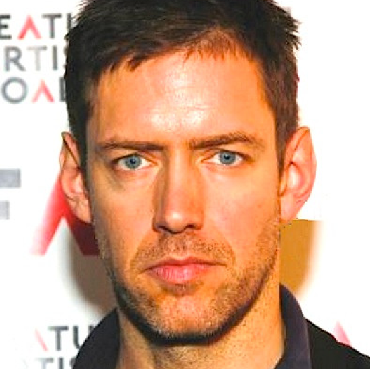
Nacido en 1968, Ed O’Brien es un músico británico conocido por su habilidad con la guitarra y su estilo innovador, fusionando rock y electrónica. Su enfoque creativo y su talento lo hacen destacar en la escena musical.
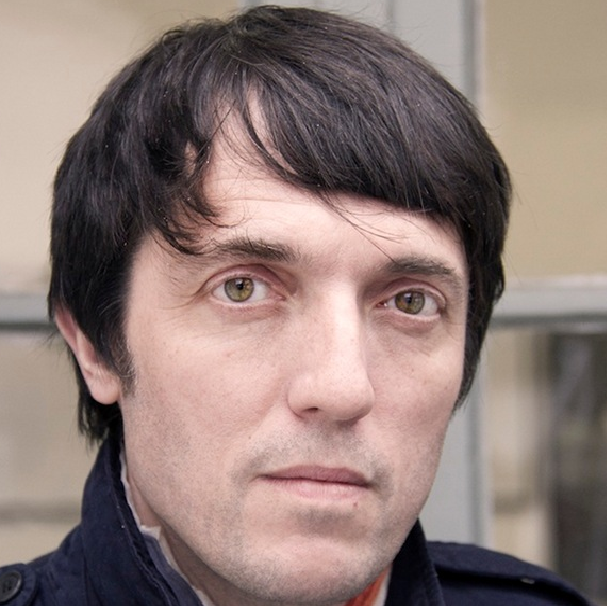
Nacido en 1969, Colin Greenwood es un bajista británico conocido por su estilo versátil y su habilidad para combinar líneas de bajo melódicas con innovadores efectos sonoros en una variedad de géneros musicales.
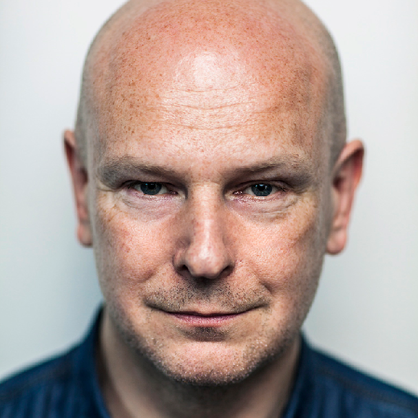
Nacido en 1967, es un baterista británico conocido por su precisión y estilo sobrio, aportando una base rítmica sólida y matizada a la música, tanto en estudio como en directo.
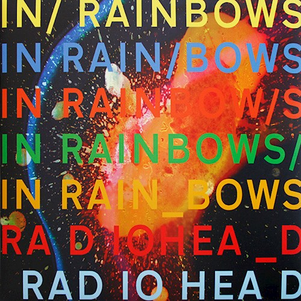
El álbum "In Rainbows," lanzado en 2007, revolucionó la industria musical con su modelo de distribución innovador, permitiendo a los oyentes decidir el precio de la descarga digital. Musicalmente, es una exploración de texturas y emociones, desde la serenidad de "Nude" hasta la intensidad de "Bodysnatchers." Las letras de Thom Yorke abordan amor, pérdida, alienación y redención, mientras que la producción de Nigel Godrich fusiona rock alternativo, electrónica y folk. "In Rainbows" destaca el genio de Radiohead y su impacto duradero en la música contemporánea.
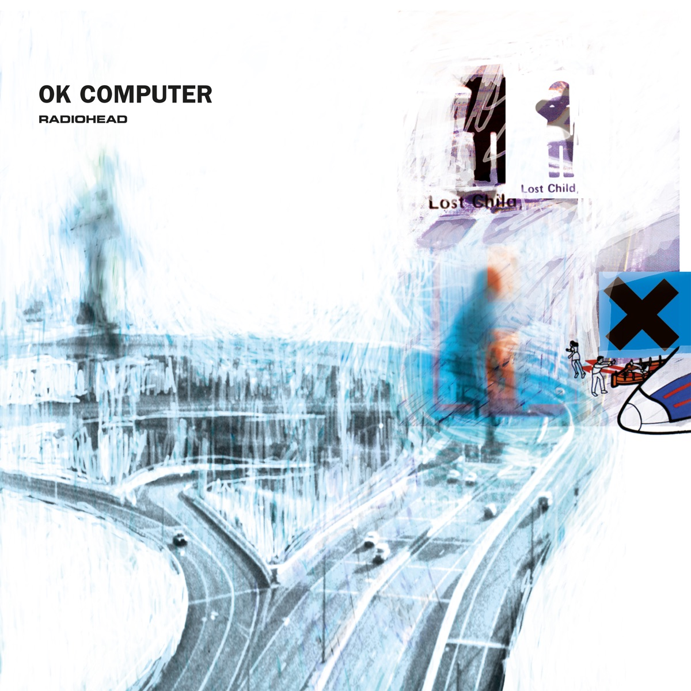
"OK Computer," lanzado en 1997, es un hito del rock que refleja la capacidad de Radiohead para empujar los límites musicales y temáticos. El álbum explora la paranoia y alienación de la era tecnológica, anticipando su impacto en la sociedad moderna. Con letras que van desde la angustia de "Paranoid Android" hasta la desolación de "Exit Music (For a Film)", Thom Yorke captura la ansiedad generacional. Su música, que combina rock progresivo, electrónica y ambient, crea un sonido expansivo e innovador que sigue influyendo y resonando como una crónica visionaria de la era digital.
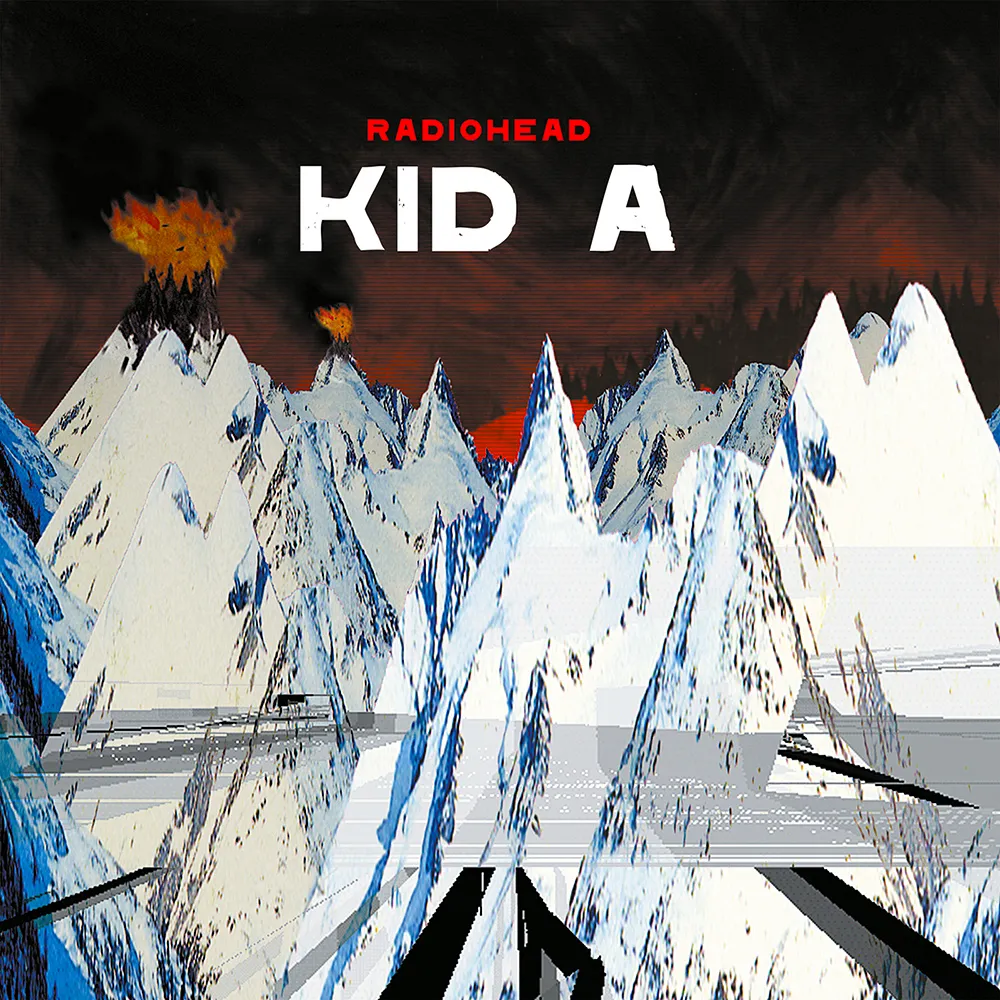
Con "Kid A", Radiohead desafió expectativas y redefinió el rock. Lanzado en 2000, el álbum es un viaje experimental por paisajes sonoros vanguardistas y texturas electrónicas. Desde la atmósfera etérea de "Everything in Its Right Place" hasta la intensidad de "Idioteque", cada pista explora la desconexión en la era digital. Las letras de Thom Yorke son crípticas y evocativas, mientras que la producción de Nigel Godrich fusiona electrónica, jazz y música clásica en una amalgama única. "Kid A" se destaca como una obra maestra de innovación musical y una visión de la ansiedad moderna.
Un poco de contexto de por qué todos los posters dicen la misma mentira: Para diseño gráfico I, teníamos que inventar un evento de temática semi-libre: te tocaba un tema entre literatura, arquitectura, entre otras cosas, y a mí me tocó música, ¡así que elegí hablar de Radiohead y hacer de cuenta que volvían a tocar en Tecnópolis!


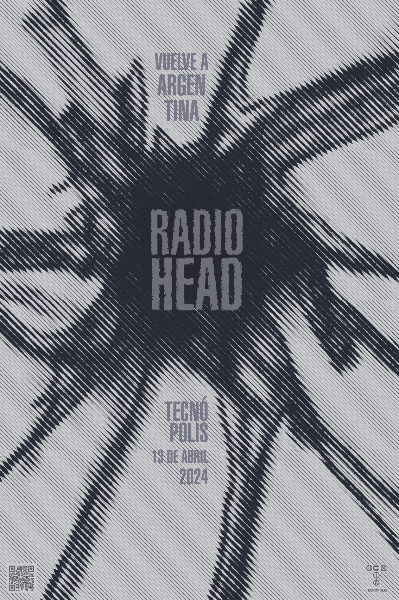
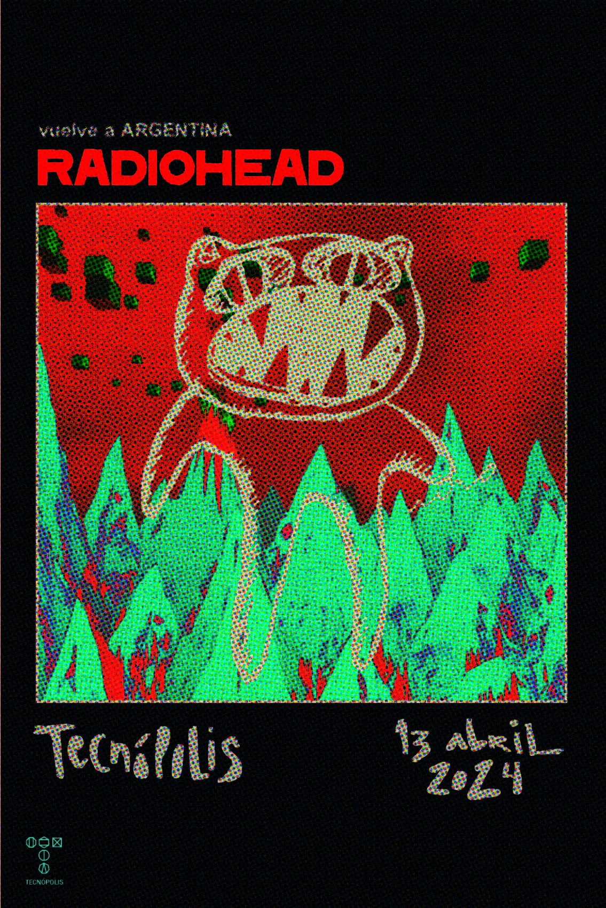

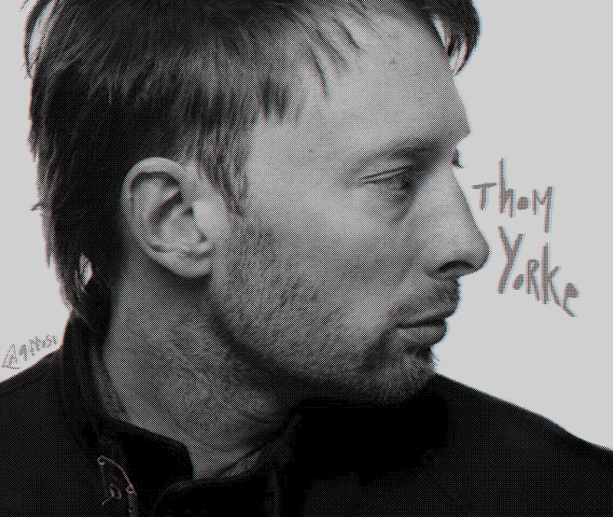
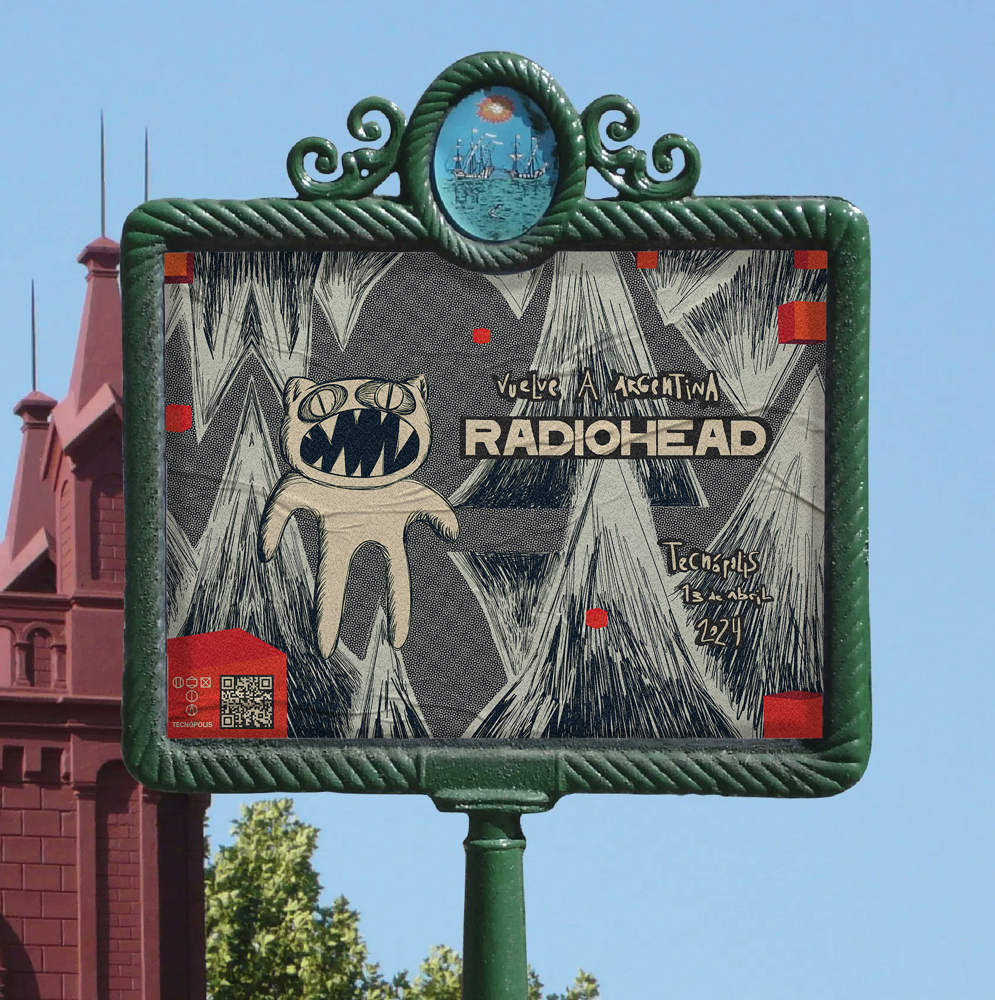
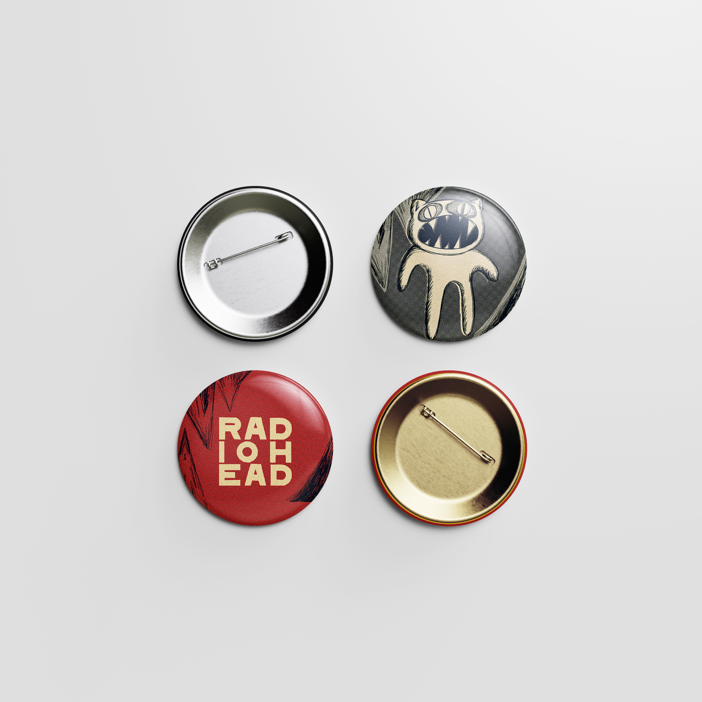

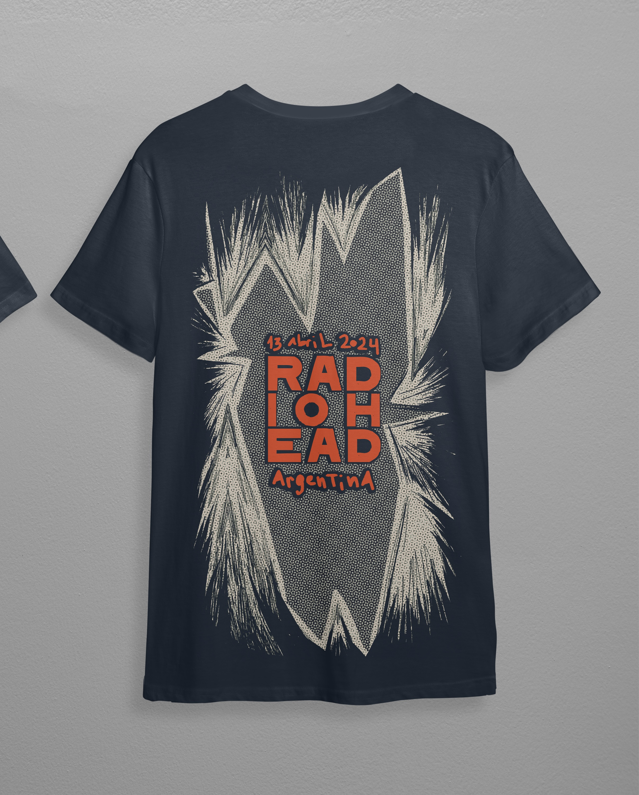
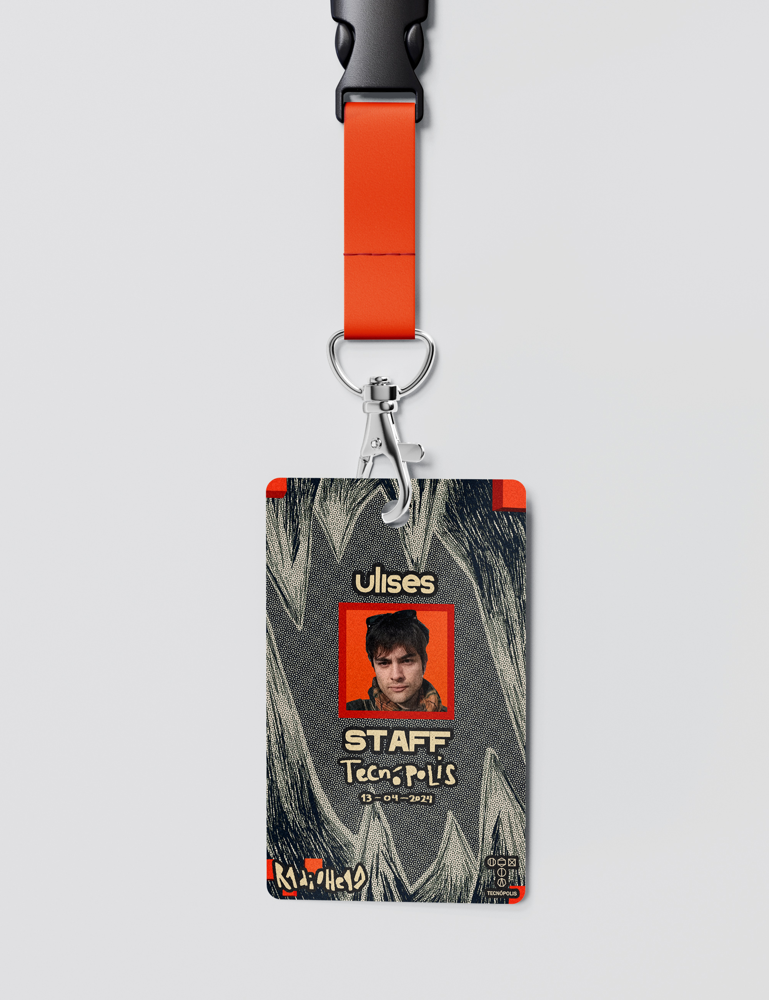